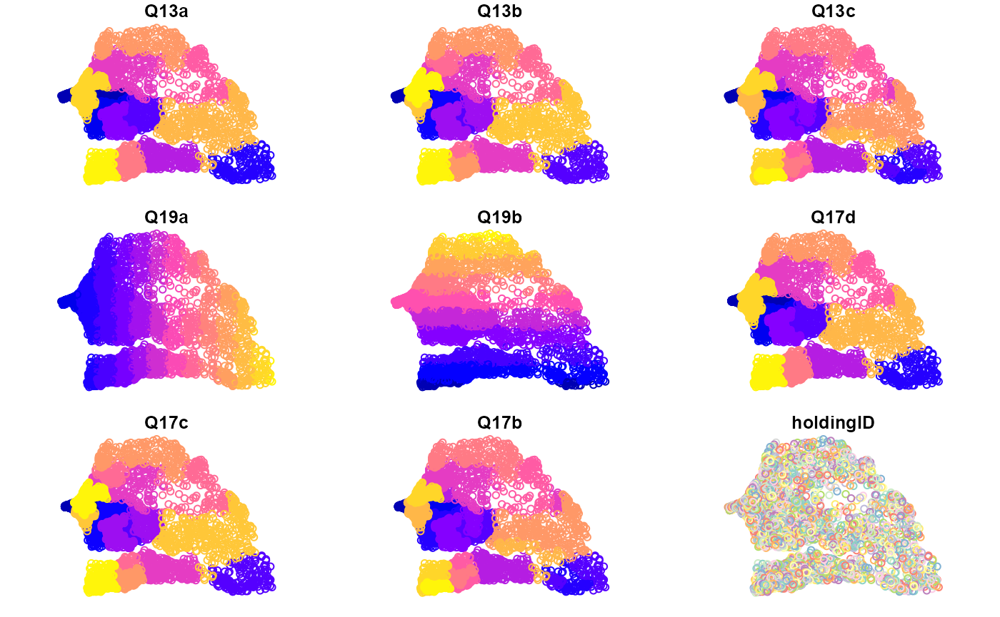

agrisvy_data.Rmd#Introduction To meet The need for more and better-quality statistical data on a more economical and faster basis in the agricultural and rural sectors, FAO has developped an Integrated Agricultural SUrvey Approach called AgriSurvey. AGRIS is designed to help national agencies accelerate
the production of quality disaggregated data on the technical, economic, environmental and social dimensions of agricultural holdings
The data generated by AGRIS is meant to inform policy design and implementation, improve market efficiency and support research. AGRIS constitutes an invaluable data source and provides the framework for designing, monitoring and evaluating any agricultural or rural policy or investment. The proposed generic AGRIS questionnaires cover most of the farm-level MSCD data requirements. They also provide basic data for monitoring the relevant indicators for the Sustainable Development Goals (SDGs), a set of goals adopted by countries on 25 September 2015 to end poverty, protect the planet, and ensure prosperity for all as part of a new sustainable development agenda.
Data produced within the AgriSurvey Framework are disseminated through different release type (PUF, SUF). Besides, not all the modules have completed for the moment by 50x30countries.
In order to allow the use the agris data for training purpose, we
develop in the agrisvyr package a function that generate
simulated agriSurvey data base on the generic questionnaire available in
the The AGRIS Handbook on the Agricultural Integrated Survey`.
library(agrisvyr)
#> Warning: replacing previous import 'sdcMicro::freq' by 'questionr::freq' when
#> loading 'agrisvyr'
#>
#> Attaching package: 'agrisvyr'
#> The following object is masked from 'package:base':
#>
#> labelsIn this example, we create an agrisurvey adataset for Senegal. Geographic level data and GPS data are among those collected in agris Survey. To generate this data, we use the administrative boundries are input and the number of point to generate within each boundry. You can provide upto 3 levels of like Region, department, commune for the exemple of Senegal. Some country has just one or 2 administrative level, in seach case there is a possibility to just limit in those bountries.
data=agrisvyr::generate_agrisdata(agrisvyr:::SEN3_shp)
#> Warning: `tbl_df()` was deprecated in dplyr 1.0.0.
#> i Please use `tibble::as_tibble()` instead.
#> i The deprecated feature was likely used in the wakefield package.
#> Please report the issue at <8;;https://github.com/trinker/wakefield/issueshttps://github.com/trinker/wakefield/issues8;;>.
plot(data)
#> Warning: plotting the first 9 out of 50 attributes; use max.plot = 50 to plot
#> all